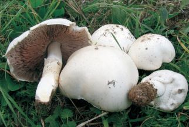
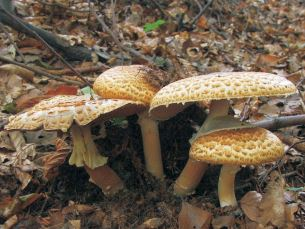
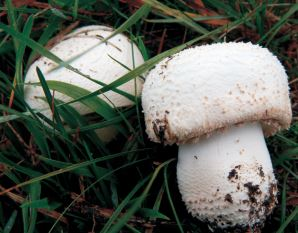
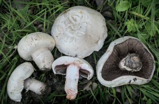
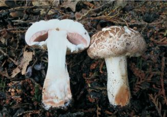
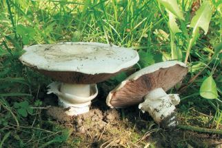
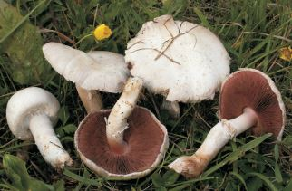
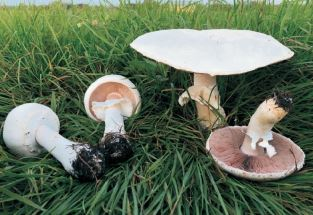
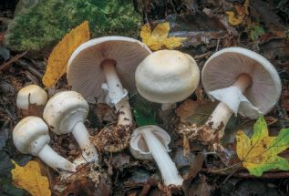
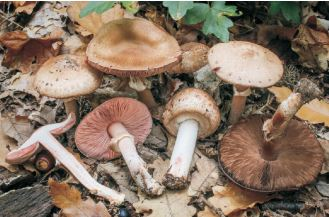

| Gomba képe | Magyar név | Latin név | Leírás |
|---|---|---|---|
|  | Erdőszéli csiperke | Agaricus arvensis | Késő tavasztól ősz végéig, erdőszéleken. Ízletes gomba faj. |
|  | Óriási csiperke | Agaricus augustus | Nyár elejétől ősz derekáig, főleg gyertyánosokban. Egyesével nő, ritka, ezért kíméljük. |
|  | Ligeti csiperke | Agaricus benesii | Júniustól akár novemberig, füves területen. Jó ízű gomba faj. |
|  | Sziki csiperke | Agaricus bernardii | Tavasz végétől ősz közepéig, legelőkön, boszorkány körben. |
|  | Kétspórás Csiperke | Agaricus bisporus | Márciustól egészen novemberig, kertekben, parkokban, komposzton. |
|  | Ízletes Csiperke | Agaricus bitorquis | Tavasz közepétől egészen kellemes hőmérsékletű őszig. |
|  | Mezei csiperke | Agaricus campestris | Nyár elejétől ősz végéig. Más gombász könyvek Kerti csiperkének nevezik. |
|  | Nagyspórás csiperke | Agaricus crocodilinus | Májustól novemberig nő legelőkön. Az állattartás csökkenésével egyre ritkább. |
|  | Gumós csiperke | Agaricus essettei | Tavasz végétől az ősz végi fagyokig. A gumós tönkvég és a sárguló árnyalata miatt nem jellemző a gyűjtése. |
|  | Erdei csiperke | Agaricus sylvaticus | Nyár elejétől a késő őszi fagyokig. Hegységekben nem ritka faj, de a helyiek mégsem gyűjtik. |